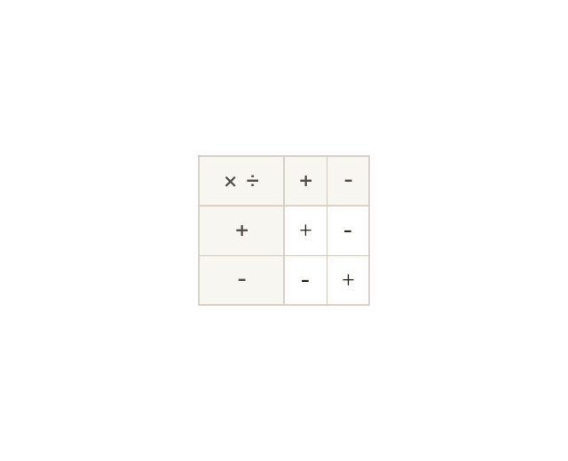

Same signs give positive, different signs give negative
Same signs multiply or divide to a positive answer. Different signs give a negative answer.
Two numbers with the same sign multiply or divide to a positive answer; two numbers with different signs give a negative answer. This applies to both multiplication and division equally.